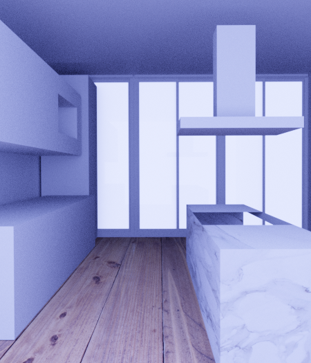

Kitchen (in progress)
3D kitchen model created in Blender. There are currently two textures added for the flooring and left counter. The set of three glass doors were created usign the "archipack" feature. Next to be implemented is the sink, chairs, and light fixtures.